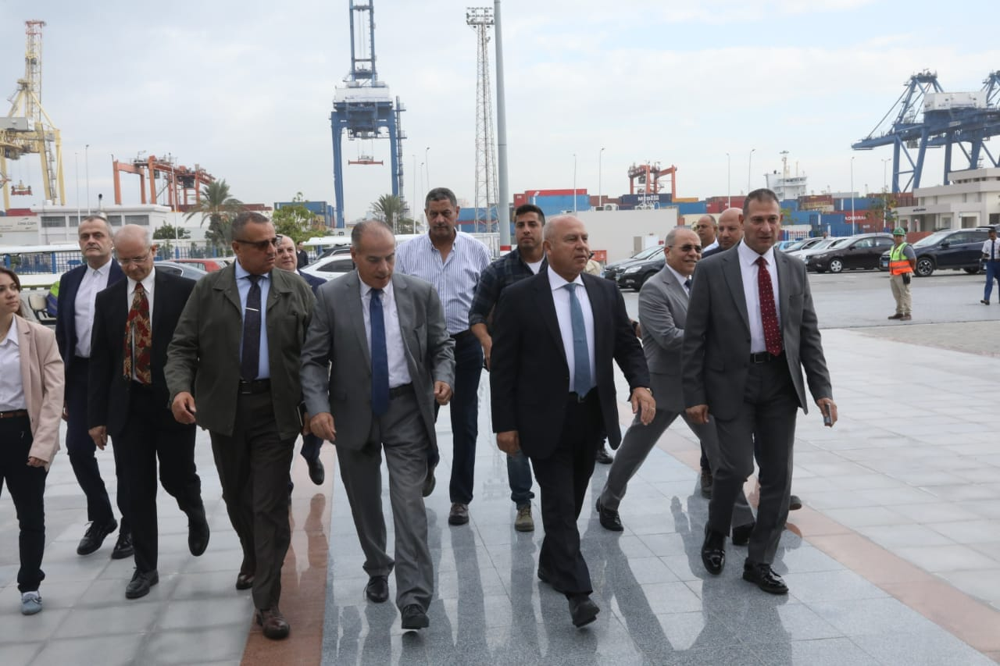
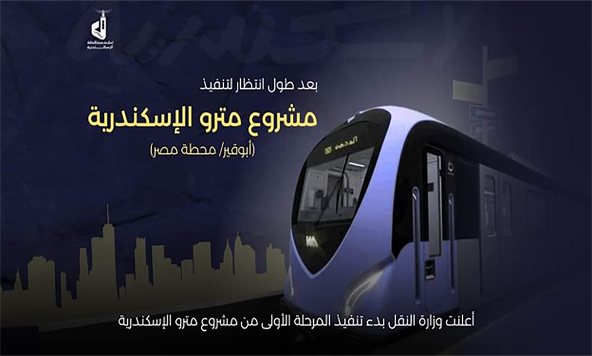

-

وزير النقل يشهد توقيع (3) مذكرات تفاهم و اتفاقية تعاون و اعلان نوايا في مجال النقل البحري مع الموانئ وشركات الملاحة العالمية –
علي هامش فعاليات اليوم الثالث للدورة الخامسة لمعرض النقل الذكي للشرق الاوسط وافريقيا TransMEA2023 وزير النقل يشهد توقيع (3) مذكرات تفاهم و اتفاقية تعاون و اعلان نوايا في مجال النقل البحري مع الموانئ وشركات الملاحة العالمية
-

وزير النقل يشهد توقيع اتفاقيتين اطاريتين في مجال الاستثمار والتصنيع المحلي لنظام النقل الترددي
بالقطارات و نقل التكنولوجيا، والتصنيع المحلي، وتوريد، وصيانة البواجي
TransMEA2023 علي هامش فعاليات اليوم الثالث للدورة الخامسة لمعرض النقل الذكي للشرق الاوسط وافريقيا وزير النقل يشهد توقيع اتفاقيتين اطاريتين في مجال الاستثمار والتصنيع
المحلي لنظام النقل الترددي بالقطارات و نقل التكنولوجيا،
والتصنيع المحلي، وتوريد، وصيانة البواجي GANZ
-
 وزير النقل يتفقد محطة تحيا مصر خلال زيارته لميناء الإسكندرية ويشهد عملية استقبال وتفريغ السفينة EVER LEARNED المحملة ب 6 آلاف حاوية
الوزير : تطبيق نظام التسجيل المسبق للشاحنات بالمحطة ساهم في تقليل زمن مكوث الحاويات، واصبح وقت الشاحنة داخل المحطة لا يتعدى 25 دقيقة و تم تسجيل أكثر من 7 ألاف شاحنة حتى الأن على النظا
-

بيان صادر عن هيئة قناة السويس: الفريق أسامة ربيع يستقبل السفير الكورى
الفريق أسامة ربيع يستقبل السفير الكورى لبحث سبل التعاون المشترك فى مجالات التحول الأخضر
.(نقلا عن صفحة قطاع النقل البحرى) …
-
 أعلنت وزارة النقل بدء تنفيذ المرحلة الأولى من مشروع مترو الإسكندرية (أبوقير/ محطة مصر)
بعد طول انتظار لتنفيذ "مشروع مترو الإسكندرية" وسنوات كثيرة من الدراسة من قبل الخبراء والمتخصصين، أعلنت وزارة النقل بدء تنفيذ المرحلة الأولى من مشروع مترو الإسكندرية (أبوقير/ محطة مصر)
-
المداخلة الكاملة للفريق مهندس كامل الوزير وزير النقل في علي مسئوليتي قناة صدي البلد